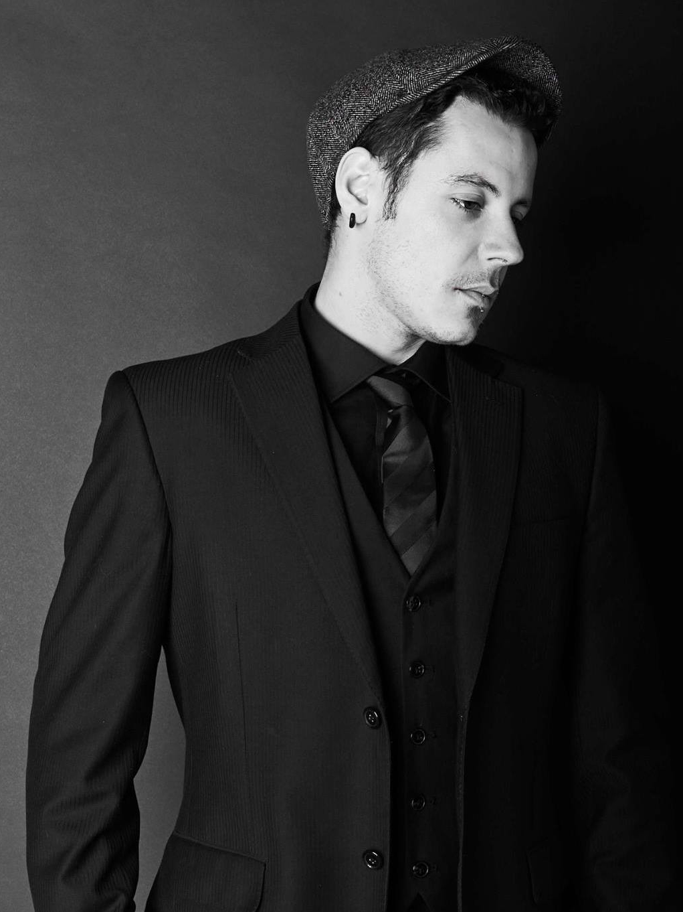

"Un poème n'est jamais terminé. Simplement abandonné."
-Patti Smith

"Dans nos bouches le mot liberté devient insultant, car c'est les soldats qui le portent et non plus le vent. -Akhenaton"
"Quand je suis content je vomis..."

"Si la matière grise était plus rose, le monde aurait moins les idées noires." - Pierre Dac